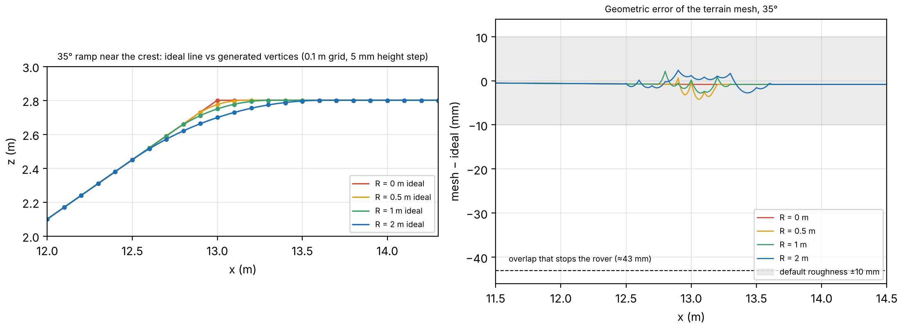
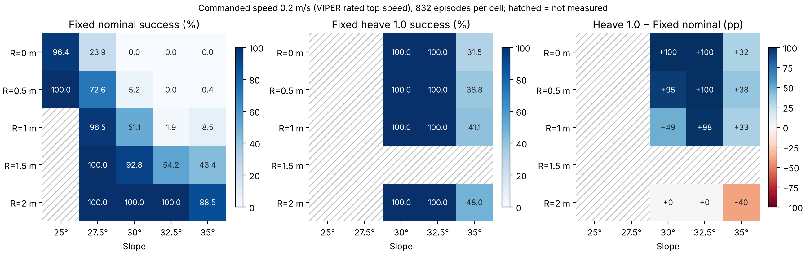
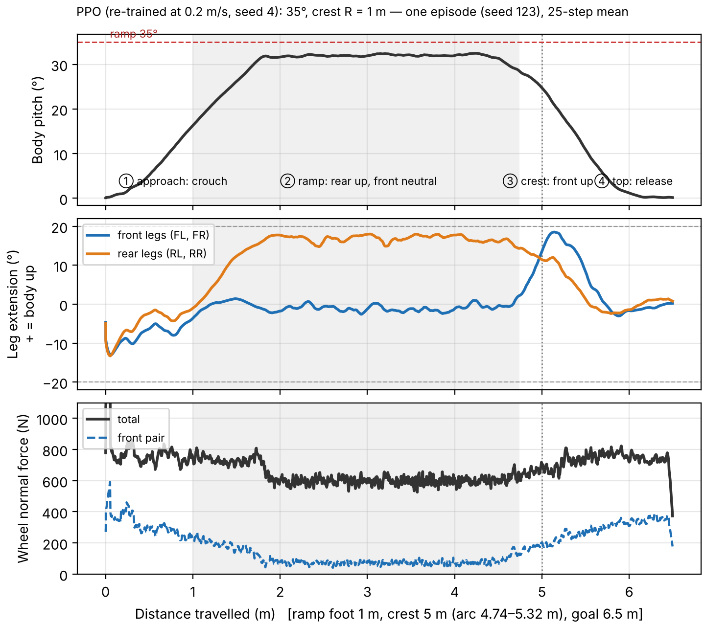
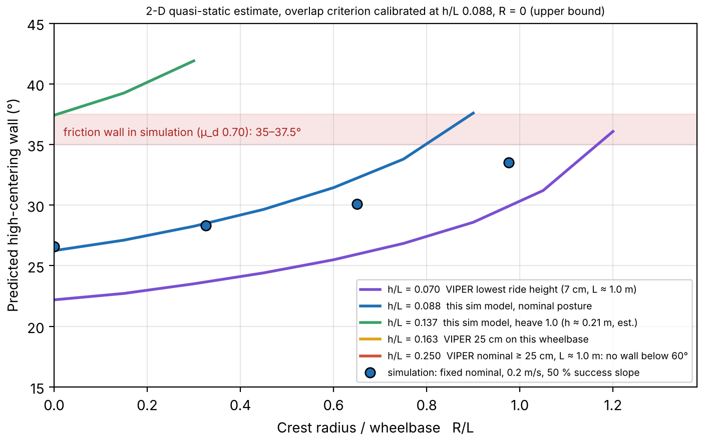

한 줄 — 꼭대기(경사→평지 꺾임부)의 둥근 정도가 배 걸림 경계를 정한다는 결과는 나왔지만, 사용한 시뮬레이션 모델의 지상고가 실제 VIPER 요구값의 절반이라 "VIPER급 로버"라는 주장은 철회하고 지상고/휠베이스(h/L) 지도로 범위를 줄이는 방향을 제안합니다.
L-Project 등판 실험에서 고정 서스펜션 로버가 30° 경사의 날카로운 꼭대기에 차체가 걸려 멈췄습니다(성공률 0.8 %). 자동차의 브레이크오버 각 2·arctan(2h/L)은 "처음 닿는 각"(이 모델 19.9°)일 뿐, 실제로 멈추는 경사(26.6°)와 둥근 꼭대기는 설명하지 못합니다.
질문: 배 걸림을 정하는 것은 경사각만이 아니라 꼭대기의 둥근 정도이며, 능동 서스펜션은 어떤 경사 × 꼭대기 조합에서만 필요한가.
| 항목 | 설정 |
|---|---|
| 시뮬레이터 | Isaac Sim 5.0 + Isaac Lab, 강체 지면, 동마찰 0.70 / 정마찰 0.90 |
| 지형 | 경사 25~35° × 꼭대기 반경 R = 0, 0.5, 1, 1.5, 2 m (휠베이스 1.54 m 대비 R/L 0~1.30) |
| 속도 | 0.2 m/s 고정, VIPER 최고 속도 (NASA NTRS 20240013903) |
| 평가 | 조건당 832회, 성공 = 65 s 안에 6.5 m(꼭대기 너머 1.5 m) |
| 비교 | 고정 기본 자세 / 고정 최대 높이(heave 1.0) / 학습 정책(PPO, 시드 3개) |


| 꼭대기 반경 R | 0 | 0.5 m | 1 m | 1.5 m | 2 m |
|---|---|---|---|---|---|
| 고정 기본 자세 50 % 경사 | 26.6° | 28.3° | 30.1° | 33.5° | 35° 초과 |
| 35°, 0.2 m/s | 고정 기본 | 최대 높이 | 학습 정책 (시드 6 / 3 / 4) |
|---|---|---|---|
| R = 0 | 0 | 31.5 | 34.1 / 49.8 / 59.5 |
| R = 1 m | 8.5 | 41.1 | 98.2 / 97.8 / 100 |
| R = 2 m | 88.5 | 48.0 | 98.8 / 98.6 / 100 |
날카로운 꼭대기의 35°는 학습 정책도 풀지 못했습니다. 시드 편차가 크고 가장 낮은 시드는 최대 높이 자세와 구별되지 않습니다.
근거가 한두 칸이고 마찰 한계 바로 위라 시간·속도에 민감한 조건입니다. 130초 재측정과 마찰 0.6의 0.2 m/s 측정에서 흔들리면 주장에서 내립니다.

정정: 이전에 "뒤를 올려 앞바퀴를 더 누른다"고 설명했지만, 이 기록에서 오르막의 앞바퀴 하중은 전체의 약 12 %로 늘지 않았습니다. 차체를 세우는 효과(3°)만 보입니다. 패턴 설명용이며 시드 6, 3의 기록을 추출 중입니다.
출처: VIPER mobility (NASA NTRS 20220000441), VIPER geotechnical (Planetary Science Journal, 2025)
| 분야 | 연구 | 한 것 | 겹침 |
|---|---|---|---|
| 도로공학 | Eck & Kang 1991, HANGUP | 건널목 형상 × 휠베이스 × 지상고로 저지상고 차량 걸림 예측 | 큼 |
| 화성 로버 | MER 운영, TANav (JFR 2009), ACE (arXiv:1808.00031) | 지상고·high-centering을 경로계획에서 판정 | 큼 |
| 능동 자세 | Scarab (IJRR 2010), SherpaTT (JFR 2018) | 차체 높이·자세 능동 조절, 급경사 실물 (최대 28°) | 중간 |
| 자세와 슬립 | Inotsume 외 (JFR 2013) | 롤 자세가 모래 경사 횡단 미끄러짐에 주는 영향 | 중간 |
| 학습 제어 | ERNEST (arXiv:2606.06790), TERRA (CoRL 2026) | 능동 서스펜션 강화학습, 실물·변형 지면 (15~25°) | 작음 |
조사 범위에서 찾지 못한 것: 급경사(25~35°) 꼭대기의 배 걸림 경계를 마찰 한계와 한 지도에 놓고, 고정 자세로 되는 범위와 능동 자세가 필요한 범위를 h/L, R/L로 나눈 것. "없다"가 아니라 "못 찾았다" 수준이며, 결과는 시뮬레이션뿐입니다.
바꾼 질문: 지상고/휠베이스(h/L)와 꼭대기 반경(R/L)이 주어질 때, 배 걸림이 마찰 한계보다 먼저 오는 조건은 무엇인가.

| 질문 | 답변 |
|---|---|
| VIPER는 지상고 25 cm인데? | 맞습니다. VIPER 주장은 철회하고 h/L로 일반화하며, 저지상고 상태의 결과임을 명시합니다. |
| 도로공학에 이미 있지 않나? | 걸림 기하는 인용합니다. 차이는 급경사에서 마찰 한계·자세 효과와 함께 본 것입니다. |
| 지면이 강체인데? | 결과는 상한입니다. 실제 레골리스에서는 침하로 더 일찍 걸립니다(Yutu-2, TERRA 인용). |
| 바퀴를 빨리 돌려서 이긴 것 아닌가? | 차체 속도는 명령의 0.73~0.76배였습니다. 바퀴 조절을 끈 평가로 확인 중입니다. |
| 시드 3개, 날카로운 35°는? | 시드별 값을 그대로 보고하고 날카로운 35°는 미해결로 명시합니다. |
| 격자가 둥근 꼭대기를 망가뜨리지 않나? | 메쉬 오차 4.5 mm 이하로, 멈춤 겹침(약 43 mm)의 1/10입니다. |
진행 중: 130초 재측정, 마찰 0.6 (0.2 m/s), 시드별 자세 기록, 바퀴 조절을 끈 평가.
모든 수치는 Isaac Sim 5.0 + Isaac Lab 시뮬레이션과 2-D 준정적 계산이며, 실물 로버·토양 시험 결과가 아닙니다. 시뮬레이션 로버는 VIPER 형상을 본뜬 모델로 치수가 NASA 공개값과 다릅니다(휠베이스 1.54 m, 바퀴 지름 0.61 m, 지상고 0.135 m). 마지막 업데이트 2026.11.15.